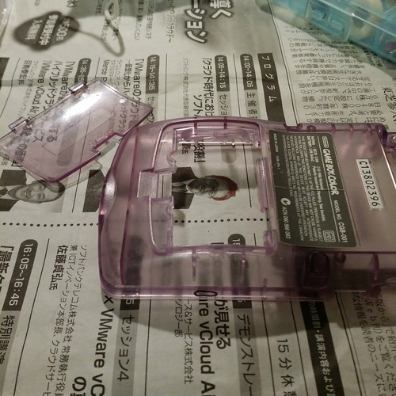

Gameboy and Li-ion recycling
I bought recently on yahoo auctions a set of 4 gameboys (1 brick, 2 colors and 1 pocket 1st gen) because I had a plan to hack them and I needed some guinea pigs. I have already 2 at home but ... well, it was a total of 1,500 JPY (10 euro w/ delivery) so. Got them yesterday morning, quick check: all working modulo the inevitable sticky buttons or gunk that went everywhere after 15 years. Dismantle, wash (water & soap), remove glue (ugly pokemon stickers) and marker (acetone), dry, reassemble. Working fine, nice looking and that vomiting man-sweat smell is gone (previous owner must have had very sweaty hands).One of the GB color had one battery electrode completely corroded by leaking battery (thanks "sweaty palms" for sending me the leaking battery too, appreciated). So I replaced it with one of the other GB color, worked like a charm. Then I saw that abandonned GB color without its original battery connector destined to inactivity ... unless ... hey, I was playing with some Li-Ion battery from old cellphone the other day, I even plugged one to those 2USD ebay Li-Ion charger. Hum, 3.7v & 1,100 mAh looks good that could power the GB, but 3.7v is too much, I need 3v. Wish I had some way to regulate that, but buying or making a buck converter looks boring, and buying on eBay takes time. If I could just drop those 0.7v it would be perfe... 0.7v drop? Hey, silicium diodes do that! %20 reverse polarity protection! Eureka!
For those who are curious, the battery has a massive lifespan, like more than 10h straight. I did the test: turn on the GB, start a game or let the tetris demo run, I never saw it run out of battery even after 10 or 12h straight... impressive.
By the way a good video about Li-Ion battery from Mr. Dave Jones http://www.youtube.com/watch?v=A6mKd5_-abk
Thank you Hackaday for featuring this page (^_^) http://hackaday.com/2015/01/01/game-boy-with-lithium-batteries-and-usb/
Build
Parts
- GameBoy color or pocket or light : any of the 3v/0.6 Wh GB. For the original brick you'll need a boost converter but since there's looooots of free space (remember it's a AAAx4 battery pack) I'm not worried for you.
- Li-Ion battery: I hereby forbid you to buy one. Just open your closet you can find minimum 2 or 3 unused. That old cell phone (that was meant to work 2 years only anyway), an old spare cell phone battery, old creepy camera,... Keyword here is REUSE, save a few bucks and help nature (she needs it).
- 3.7v is what you want and is most likely what you'll get.
- 1,000 mAh is a good start (typical old cellphone battery), but the mAh won't change much except how often you'll have to reload.
- Silicium diode: no characteristic special, the cheapass ones are perfect. Just don't pick a Schotky or a Zener or a germanium, classicissim 1N4148 is perfect.
- USB Li-Ion battery charger: eBay is your friend. ~2 USD shipping included.
Schema
Very simple, the diode does the drop of 0.7v meaning you'll feed your GB ~3v which is what she needs. Li-Ion charger goes also before the diode.
WARNING: Don't try to play and charge at the same time, not sure what will happen, but nothing good I fear.
Assemble
Foreword about the soldering on battery connectors: I soldered directly on the battery connector. I do not recommend newbies to do that, use a connector or something else. But if you wanna do it, here's my receipe:- A little acid paste on the battery leads : the solder will melt quicker so less heating of the battery itself
- A blob of solder on %20 and - of the battery (and on the wire of course)
- A fast and steady hand, all must be done in "one mississipi" (~1-1.5 sec): warm up the blob of solder on the battery, bring the wire you already warmed, beware of cold joins (no shaking and good heating are the rules). If it takes ore than 2 sec: STOP, you'll damage something, and remember that Li-Ion battery are disaster waiting to happen, a modern version of the hand grenade. Wait 1 minute and retry. That's nothing hard really, just be quick.
Steps to assembly:
- Take your dremel and remove the battery pack, all that dangles inside the GB body
- Dremel out the battery cover tongue, you won't need it anymore
- Super-glue the battery cover in place and let dry
- You can fix your li-ion charger board like you want, I for myself used one of the existing GB screw for fixation and also one of the screw that was holding the back or the GB from the bottom of the battery case (now gone). Fixation is so-so, one of the screw "holds" the board and the other one just fobids it to move when you plug the USB so be gentle when plugging.
- Make a hole for the USB cable. You might have to polish a bit the surroundings of the USB hole you made, the GB plastic is thick and my USB micro plug was barely long enough to make contact. A little dremel magic with those "industrial diamond" head to remove half a mm of plastic and now contact is perfect. A bit of acetone wiping to soften the connector hole is a nice touch.
- Assemble, try to put things in a way it won't move or shortcut, vinyl tape or hot-snort to discretion, accept the fact that now GB bottom got juuuuuuust a little loose and voila!
- Enjoy hours of game, knowing you reuse a battery, save money and the earth of all the batteries NiCd/NiMh you would buy.
PS: go easy with the acetone. Gameboy plastic melts with acetone, which can be what you want to do (to remove the rough aspect of a piece of plastic you sawed or sandpapered) or it might lead you to unpleasant effects. Indeed, GB plastic is not flat like a sheet of paper but has a fine grain. Wiping your GB with acetone will remove that grain, so know it before starting, or you might end up having to polish the whole baby with nail polish remover (the cheaper the more acetone there is inside).
Pictures
Thank you Mr. Sweaty-palms, that's a nice acid-eaten battery connector here.
Prototype: wires soldered on the battery, and ad'hoc soldering on the GB back. Worked fine.
Prototype: some details of the back. Notice which screw were reused to secure the USB charger.
Now on to the real thing: red circle is the diode, blue circle is the USB Li-Ion charger

Cut, drill, glue, ...
While charging you get the red light, blue one when charged.